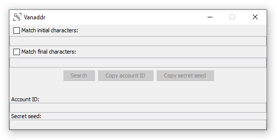

Vanaddr is a vanity address generator for Stellar.
It is:
It is a native application, so you can install it on your desktop or server, disable the internet connection, generate the address, use another internet-connected device to replace the private key with your own (full steps here).
The source code is online, so you can examine it and modify it.
It exploits the full power of your computer. It is written in a high-performance language (Java) and is optimized to remove all inefficiencies.